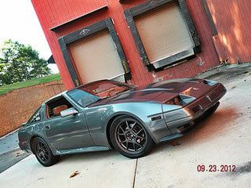

-
Ok, so im sure this has been covered multiple times and i've done research and read redz31's info on it, but im still a bit confused. Im putting an 84t motor in my 86 n/a 5 spd and was wondering what ECU would be best to run with this setup? Knowing the oxygen sensors are different and what not..
Thanks a lot
'86 NA2T: Cone filter, 3 in. turbo back, poly engine mounts, stock t3, tokico 5-ways, rattle canned engine bay, etc etc
"As I lay rubber down the street, I pray for traction I may keep, and if I do begin to slide, please dear God protect my ride! - Amen!!!!" -
run the turbo ecu… you dont need a O2 sensor to have the car run -
Just match the injectors to the ECU.
1986 300ZX Turbo…sold
1990 Skyline GT-R…new money pit
2014 Juke Nismo RS 6-speed…daily -
I wasnt able to get the 84t ECU from the other car. So, can I use any 84-87 turbo 5 spd ECU since they are all low impedance?
Again thanks a lot for the help.
'86 NA2T: Cone filter, 3 in. turbo back, poly engine mounts, stock t3, tokico 5-ways, rattle canned engine bay, etc etc
"As I lay rubber down the street, I pray for traction I may keep, and if I do begin to slide, please dear God protect my ride! - Amen!!!!" -
Yes, but you cant use the o2 sensor from an 84-85 on an 86-87, and vice versa. But o2 sensors are useless.zlover23 wrote: I wasnt able to get the 84t ECU from the other car. So, can I use any 84-87 turbo 5 spd ECU since they are all low impedance?
Again thanks a lot for the help.- VG30DET (HE341) 86 300ZX - 1982 280ZX Turbo - Headered NA 1986 300ZX 2+2 - 2000 Xterra - -
Alright thanks a lot. Sorry for all the questions, but I can use my 86 na engine wiring harness with the 84t engine right?
'86 NA2T: Cone filter, 3 in. turbo back, poly engine mounts, stock t3, tokico 5-ways, rattle canned engine bay, etc etc
"As I lay rubber down the street, I pray for traction I may keep, and if I do begin to slide, please dear God protect my ride! - Amen!!!!" -
Yes you can use your stock harness but if you plan on using turbo idle controls then you're gonna need to wire the connection differently.zlover23 wrote: Alright thanks a lot. Sorry for all the questions, but I can use my 86 na engine wiring harness with the 84t engine right?

Copyright © 2006–. All rights reserved. Privacy Policy